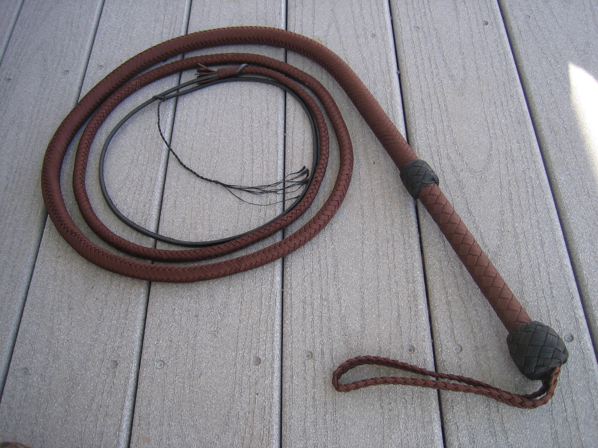
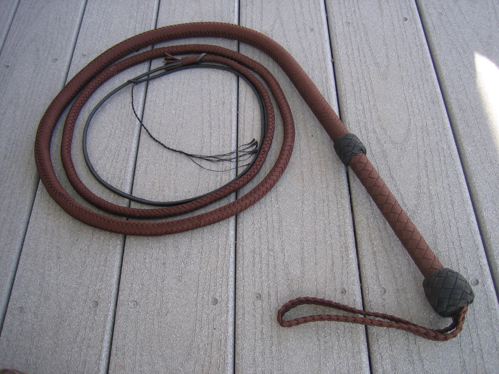

The whip's crack is used to guide, drive, or direct cattle—the loud noise startles or motivates movement. Whips have a simple funcation of making a very loud noise. The whip spins fast and then makes a crack. The crack can even break the sound barrier